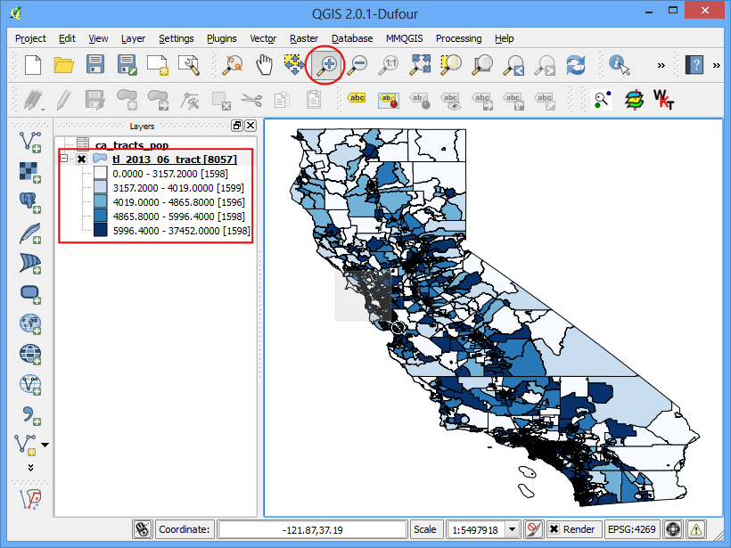

Buscando y descargando datos de OpenStreetMap
Obtener datos de alta calidad es esencial para cualquier tarea en SIG. Una gran fuente de datos gratis y licenciados abiertamente es OpenStreetMap(OSM) . La base de datos de OSM consiste de calles, datos locales y polígonos de construcciones. El acceso a la obtención de datos de OSM en un formato SIG está integrada en QGIS. Este tutorial explica el proceso para buscar, descargar y usar datos de OSM en QGIS.
Resumen de la tarea
Buscar Londres en la base de datos de OSM, navegar y seleccionar una parte de la ciudad y extraer todas las ubicaciones de pubs como un shapefile.
Procedimiento
Usaremos 2 plugins para completar la tarea. Asegúrate de haber instalado los plugins OSM Place Search y OpenLayers. Revisa Using Plugins para instrucciones sobre descargar plugins.

El plugin OSM Place Search se instalará como un Panel en QGIS. Verás un nuevo panel titulado OSM place search... en QGIS.

El plugin OpenLayers está instalado bajo el menú Complementos. Este plugin te permite acceso a mapas de varios proveedores en QGIS. Carguemos el mapa de OpenStreetMap en QGIS yendo a .

Verás un mapa del mundo cargado en QGIS.
Nota
Si no ves algún dato - asegúrate de estar conectado a internet - porque los tiles del mapa son descargados de internet. También puedes utilizar la herramienta Desplazar mapa para mover poco a poco el lienzo del mapa, lo que activará una actualización del mapa.

Ahora, vamos a buscar por Londres. Escribe la solicitud en el campo Name contains... del panel OSM Place Search. Puedes posicionar el mouse sobre los resultados y el resultado correspondiente será destacado en el mapa. Selecciona el primer resultado - que es la ciudad London en el Reino Unido - y clickea el botón Zoom.

Verás la capa base moverse y centrarse en la ciudad de Londres. Puedes usar la herramienta Zoom para hacer zoom y seleccionar el área exacta de tu interés. Para este tutorial, puedes hacer zoom en el centro de la ciudad como se muestra.

Ahora podemos descargar los datos mostrados en el mapa. Anda a .

En el cuadro de diálogo Descargar datos de OpenStreetMap, elige A partir del lienzo del mapa como la Extensión. Elige la ruta y nombre del archivo de salida como london.osm.

El archivo descargado con la extensión .osm es un archivo de texto con el formato OSM XML. Primero necesitamos convertirlo en un formato adecuado para que sea fácil de manipular en QGIS. Anda a .
Nota
Ahora que no necesitamos la funcionalidad OSM Place Search, puedes clickear el botón cerrar para quitarla de la ventana principal. Si necesitas usarla de nuevo, puedes habilitarla desde (Windows) o (Linux).

Elige el archivo descargado london.osm como el Archivo XML de entrada. Nombra el Archivo DB de SpatiaLite de salida como london.osm.db. Asegúrate que el botón de Crear conexión (SpatiaLite) después de la importación está activado.

Ahora el último paso. Necesitamos crear las capas de geometría SpatiaLite que pueden ser vistas y analizadas en QGIS. Esto se hace clickeando .

El archivo london.osm.db contiene todos los tipos de características de la base de datos de OSM - puntos, líneas y polígonos. Las capas GIS contienen típicamente solo un tipo de característica, así que necesitas elegir una. Como estamos interesados en las ubicaciones puntuales de pubs, aquí necesitas elegir Puntos (nodos) como el Tipo de exportación. Elegirías Polilíneas (vías abiertas) si quieres obtener la red de caminos. Nombra la Nombre de la capa de salida como london_points Los datos GIS tienen 2 partes: ubicación y atributos. También estamos interesados en el nombre del pub - no solo su ubicación, así que necesitamos exportar esa información también. Clickea en Cargar de la base de datos bajo la sección Etiquetas exportadas. Esto obtendrá todos los atributos desde el archivo london.osm.db. Selecciona las etiquetas name y amenity. Mira OSM Tags <http://wiki.openstreetmap.org/wiki/Tags>`_para aprender más sobre el significado de cada atributo. Asegúrate que :guilabel:`Cargar en la vista del mapa cuando se termine está seleccionado y clickea Aceptar.

Verás una nueva cada de puntos llamada london_points cargada en QGIS. Nota que esta contiene TODOS los puntos de la base de datos de OSM para la vista del mapa descargada. Como solo estamos interesados en los pubs, necesitamos escribir una solicitud para seleccionar solo esos. Click derecho en la capa london_points y selecciona Abrir tabla de atributos.

Notarás que algunos de los objetos espaciales tienen el valor de atributo pubs listado bajo la columna amenity. Clickea el botón Seleccionar objetos espaciales usando una expresión.

Ingresa la expresión “amenity” = ‘pub’` y clickea Seleccionar.

De vuelta en la ventana de QGIS, verás algunos puntos destacados en amarillo. Estos son el resultado de nuestra solicitud. Click derecho en la capa london_points y elige Guardar selección como....

En la ventana Guardar capa vectorial como..., ingresa el nombre del archivo de salida como london_pubs.shp. Deja todas las otras opciones como están y asegúrate de que la opción Agregar archivo guardado al mapa está habilitada. Clickea en Aceptar.

Verás una nueva capa llamada london_pubs en la ventana de QGIS. Deshabilita la capa london_points clickeando el ticket de selección porque ya no la necesitaremos.

Ahora está completa la extracción de la capa del shapefile de los pubs. Puedes usar la herramienta Identificar para clickear en cualquier punto y ver sus atributos.
